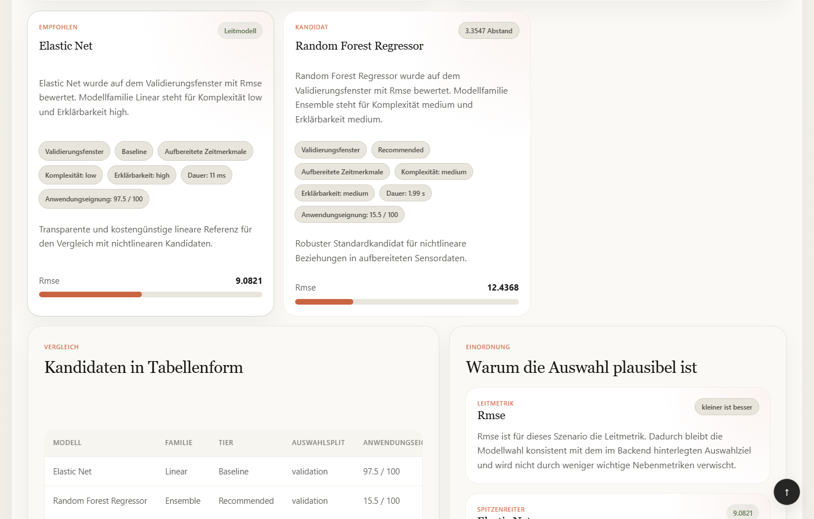

SQLAlchemy / SQLite
Sessions, Metadaten, Beziehungen, Status, Kennzahlen und Versionen.
Technische Architektur · Lokaler Forschungsprototyp
Vue führt durch den Arbeitsablauf. FastAPI prüft Eingaben, berechnet Ergebnisse und speichert ihre Herkunft. Evaluation und Anwendung bleiben getrennt – vom Datenvertrag bis zum Export.
01 / Systemaufbau
Frontend und Backend sind fachlich getrennt. Im lokalen Standardbetrieb liefert FastAPI auch das gebaute Vue-Frontend aus. Im Entwicklungsbetrieb leitet Vite API-Anfragen an FastAPI weiter. Die Trennung erfordert keine Microservices.
Auswahl, Diagramme, Zustandsanzeige und Polling. Die Oberfläche konsumiert gespeicherte Backend-Verträge.
Authentifizierung, benutzerbezogene Zugriffe, Parameter- und Antwortschemas unter /api.
Modellregistrierung, Merkmalsvertrag, Auswahlmetrik, Preflight, Ereignisbildung und Export liegen im Backend.
Sessions, Metadaten, Beziehungen, Status, Kennzahlen und Versionen.
Daten und Vorhersagen als CSV; lokal erzeugte Modellpakete mit Manifest und Prüfsumme.
Training, Veröffentlichungs-Refit und Batch-Inferenz im Serverprozess.
02 / Backend-Geschäftslogik
CSV registrieren, Schema prüfen, Quellenrollen zuordnen und die Bundle-Materialisierung nachvollziehbar speichern.
Rolling-, Delta- und Kalendermerkmale bilden. Gelernte Vorverarbeitung verwendet im Evaluationspfad Trainingsstatistiken. Zeitgrenzen müssen gültig sein.
Registrierte Kandidaten vergleichen: RMSE für PM/EO, Macro-F1 für CM, Average Precision für AD. Ein fehlgeschlagener Kandidat erhält einen Fehlerstatus.
Results und Evaluationsexport berichten den getrennten Test. model_evaluation / test_holdout enthält keine operativen Handlungsereignisse.
Ein zulässiger Gewinner wird auf allen markierten Daten neu trainiert. Seine Anwendungsversion bewahrt die ursprüngliche Validation-/Test-Evidenz.
Preflight prüft den eingefrorenen Merkmalsvertrag. inference_v1 liefert Vorhersagen und einmalig berechnete Ereignisse an UI, CSV und HTML.


03 / Defensive Umsetzung
Die Schutzmechanismen adressieren konkrete Fehlerklassen. Öffnen Sie einen Bereich für Wirkung, Implementierung und verbleibende Grenze.
Serverseitige Sessions mit HttpOnly-Cookie, Passwortprüfung gegen gespeicherte Hashes und Eigentümerprüfungen schützen benutzerbezogene Ressourcen. Pydantic prüft API-Strukturen; Upload- und Datenservices prüfen fachliche Eingaben. Selbstregistrierung ist deaktiviert.
Grenze: vorkonfigurierte lokale Konten und ein lokaler Forschungsbetrieb; kein Nachweis einer gehärteten Mehrmandantenplattform.
Code: security.py, auth_service.py, application_service.py
Validation bestimmt den Gewinner; Test bleibt getrennte Bewertung. Imputation wird aus dem Trainingsfenster gelernt. Veröffentlichung erzeugt ein separates Refit-Modell und überschreibt keine Testkennzahlen. Optionale Zielwerte im neuen Batch erzeugen nur nachträgliche observed_metrics.
Offene Grenze: Bei degenerierten Zeitstempeln kann ETL auf Zeilenpositionen zurückfallen und trotzdem chronological_fixed melden. Ein akzeptierter Datensatz garantiert deshalb nicht automatisch echte zeitliche Trennung.
Code: etl.py, application_executor.py
Vor dem Joblib-Laden werden Ready-Status, kontrollierter Pfad, Dateiexistenz und SHA-256 geprüft; Vertragsinhalt und Artefakt-ID erst nach der Deserialisierung. Neue Dateien entstehen temporär und werden mit os.replace ersetzt. Erst ein erfolgreicher Aufbau aktiviert eine neue Standardversion unter einem prozesslokalen Lock.
Grenze: vertrauenswürdige lokal erzeugte Dateien und Metadaten bleiben Voraussetzung. Prüfsummen machen fremde Joblib-Dateien nicht sicher. Dateisystem und SQLite bilden keine gemeinsame verteilte Transaktion.
Code: application_executor.py
Preflight prüft Zeit-/Gerätespalten, Merkmale, Typen und Zeitfortsetzung bekannter Geräte. Unbekannte Geräte werden als Cold Start markiert. Eingabeprüfsummen erkennen Änderungen während des Einlesens. Modellversion und Regelsnapshot bleiben mit dem Anwendungslauf verbunden.
Offene Grenzen: Die API blockiert abweichende Szenariometadaten derzeit vor dem technischen Preflight. Die Trainingsrolle eines beschrifteten Anwendungs-Presets wird noch nicht an jedem Einstieg erzwungen. Schema-Kompatibilität erkennt zudem keine beliebige fachliche Drift.
Code: application_features.py, experiment_service.py
Kandidatenfehler werden im Benchmark protokolliert. Jobfehler führen zu Rollback, Aufräumen partieller Ausgaben und gespeichertem Fehlerstatus. Beim Start werden unterbrochene Anwendungsläufe und Modellaufbauten erkannt. Referenzierte Modellversionen und Versionen im Aufbau sind vor Löschung geschützt.
Grenze: Die Jobs leben im Serverprozess. Neustarterkennung ist kein automatischer Wiederanlauf und keine dauerhafte verteilte Queue. Eine neue Standardversion ersetzt die bisherige erst nach erfolgreichem Aufbau.
Code: experiment_executor.py, application_service.py, application_executor.py
Das Backend erzeugt die kanonischen action_events der Anwendung einmal. Oberfläche, Inferenz-CSV und HTML-Bericht verwenden denselben gespeicherten Lauf. Die Zeitreihen-API ändert nur die Ansicht, nicht Modellentscheidung oder Ereignisse.
Grenze: Vertragstests prüfen Softwarekonsistenz. Sie bestätigen weder industrielle Schwellenwerte noch einen kausalen Nutzen der vorgeschlagenen Handlungsfenster.
Code: scenario_results.py, export_service.py
04 / Technische Entscheidungen
Die Architektur priorisiert lokale Reproduzierbarkeit, sichtbare Zwischenergebnisse und überprüfbare Verträge. Daraus entstehen konkrete Vorteile und bewusst begrenzte Einsatzbedingungen.
Komponenten und typisierte API-Daten trennen Interaktion von ML-Logik. Mehrstufige Auswahl und Ergebnisansichten lassen sich gezielt testen.
Aufwand: Build-Werkzeuge und die Synchronisierung von TypeScript- und Backend-Schemas.
HTTP-Verträge und Geschäftslogik bleiben getrennt. Python ermöglicht direkte Nutzung von pandas und scikit-learn ohne zusätzliche ML-Servicegrenze.
Aufwand: lange synchrone ETL-Requests und begrenzte Kapazität eines lokalen Prozesses.
Keine separate Datenbankinstallation; Metadaten bleiben relational, CSV und Modellpakete lokal nachvollziehbar. Das erleichtert Demonstration und isolierte Tests.
Grenze: Schreibkonkurrenz, Dateikonsistenz und Backups müssen bei größerem Betrieb neu bewertet werden.
Training und Inferenz blockieren nicht den auslösenden HTTP-Request. Der Status bleibt über einfache API-Abfragen sichtbar, ohne Queue- oder Streaming-Infrastruktur.
Grenze: keine dauerhafte Queue, kein Multi-Worker-Lock und keine WebSocket-Echtzeitverarbeitung.
Mapping begrenzt das Modellangebot transparent; Benchmark trifft die datenbezogene Auswahl. Bibliotheksbeleg und gemessene Leistung bleiben unterscheidbar.
Grenze: kein universelles AutoML und keine automatisch gelernte Literatur- oder Modellrangliste.
Test-Evidenz bleibt erhalten, während ein getrenntes Modell alle markierten Daten für die Anwendung nutzt. Versionen verbinden spätere Ergebnisse mit ihrem Ursprung.
Grenze: lokale Modellverwaltung, keine industrielle Freigabe oder vollständige MLOps-Plattform.
05 / Architekturentwicklung
Der frühe Python-/Web-Prototyp und die anschließende Trennung in Vue und FastAPI sind im Entwicklungsbericht beschrieben. Git wurde erst später eingeführt: Die früheste erhaltene Baseline enthält bereits Vue. Ein eigener „Backend → Vue“-Umbaucommit ist damit nicht belegt.
71a5664Frontend-Paket und Backend liegen bereits getrennt vor. Die frühere Umstellung ist Projektgeschichte, keine aus diesem Commit rekonstruierbare Migration.
945be43 / 5a1726bModell-Tier, Kandidatenvergleich und Ergebnis-/Exportdarstellung werden weiterentwickelt.
3746d8d / 731c533Backend-Veröffentlichung, Refit und Inferenz erhalten einen eigenen Anwendungspfad im Frontend.
fb5b20c / 812f615 / e0ca56dModellversionen und Eingangssignale werden gezielt untersuchbar. Version 2.0.0 bezeichnet den erweiterten lokalen Ablauf, keinen industriellen Reifegrad.
f29f9b5 / dca6af1 / c5a0189Lokale Start-/Stop-Skripte, die gemeinsame Literaturbibliothek und der breite Literaturatlas ergänzen den technischen Ablauf.